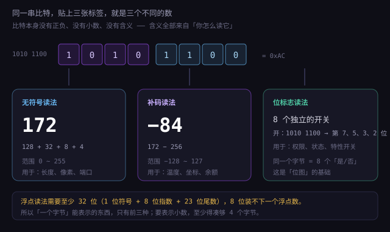
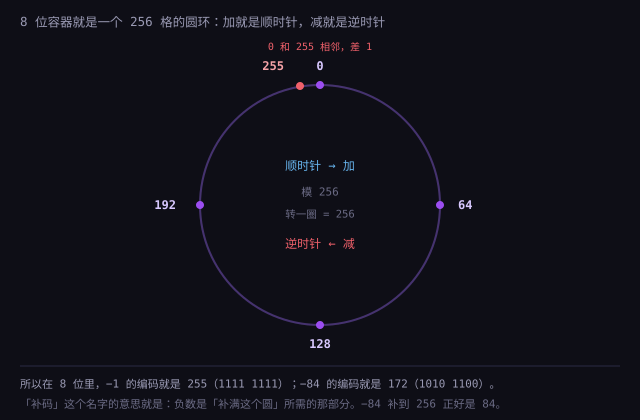
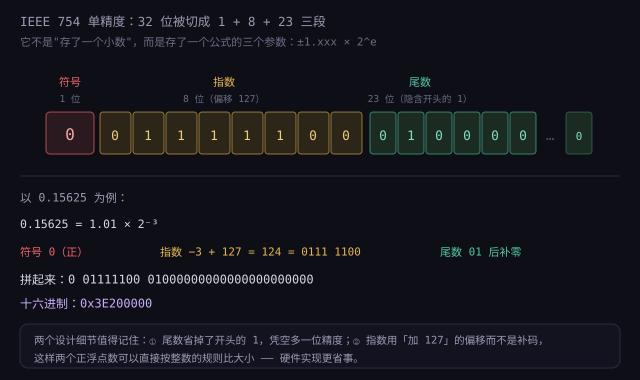

约 1.4 万字 · 3 张图 · 读完你能解释：−1 为什么是 11111111、127+1 为什么变成 −128、 0.1+0.2 为什么等于 0.30000000000000004
先摆一张表。同样一串比特，用三种规则去读，得到三个完全不同的数：
| 二进制 | 无符号读法 | 补码读法（有符号） | 浮点读法（32 位段的一部分） |
|---|---|---|---|
0000 0001 | 1 | +1 | （不适用，浮点至少要 32 位） |
0111 1111 | 127 | +127 | — |
1000 0000 | 128 | −128 | — |
1111 1111 | 255 | −1 | — |
注意第三、四行：同一串比特，无符号读是 128 和 255，有符号读却是 −128 和 −1。 差的不是「一点点」，是跨越了整个正负区间。

因为三种场景的需求根本不同：
所以计算机没有「统一的一种数字」，而是备了三套（严格说是四套，还有定点）。你写代码时每一次声明变量，都是在选标签。
你写代码时，「用哪种数字」这件事，语言已经替你决定了大部分。而这些决定，会直接变成你遇到 bug 的类型。
| 语言 | 有符号/无符号 | 溢出行为 | 整数精度 |
|---|---|---|---|
| C / C++ | 都有，靠类型名区分（int / unsigned int） |
无符号回绕；有符号是未定义行为 | 宽度因平台而异 |
| Java | 只有有符号（byte/short/int/long） | 静默回绕（明确定义） | 宽度写死 |
| C# | 都有，且默认做溢出检查（可关闭） | 默认抛异常 | 宽度写死 |
| Go | 都有（int / uint） |
静默回绕 | int 宽度随平台 |
| Rust | 都有（i32 / u32） |
debug 模式 panic，release 回绕 | 宽度写死 |
| Python | 只有有符号（但无限精度） | 不会溢出 | 任意精度 |
| JavaScript | 没有整数类型（全是双精度浮点） | 超过 2⁵³ 精度丢失 | 后来加了 BigInt |
规则最简单：每一位按 2 的幂加权，全部加起来。
1011 0110
= 1×128 + 0×64 + 1×32 + 1×16 + 0×8 + 1×4 + 1×2 + 0×1
= 128 + 32 + 16 + 4 + 2
= 182位宽决定范围：n 位无符号整数的范围是 0 到 2ⁿ−1。
| 位宽 | 范围 | 典型用途 |
|---|---|---|
| 8 位 | 0 ~ 255 | 像素通道、字节、ASCII 扩展 |
| 16 位 | 0 ~ 65,535 | 端口号、Unicode 基本平面、图片尺寸 |
| 32 位 | 0 ~ 4,294,967,295 | IPv4 地址、文件大小（4GB 上限）、时间戳 |
| 64 位 | 0 ~ 1.8×10¹⁹ | 内存地址、大文件字节数、数据库主键 |
TCP/IP 协议里，端口号字段是 16 位，所以端口范围被死死限定在 0~65535。 不管你的服务器多强，都不可能开一个 70000 端口的服务——不是软件限制，是协议字段宽度就这么定的。
同理，IPv4 地址是 32 位，所以全世界只有约 43 亿个地址——这就是为什么要有 NAT（1.1.1 讲过）、 为什么要推 IPv6（128 位，够给每一粒沙子编号）。
| 好处 | 代价 | |
|---|---|---|
| 范围 | 同样位数，比有符号多一倍的正数空间 | 不能表示负数 |
| 运算 | 加减乘除都是最直接的电路，没有符号处理 | 减法「借位」时会出现「下溢」变成巨大正数 |
| 比较 | 直接按位比大小 | 无符号和有符号比较时，规则完全不同（后面 -7 会讲这个坑） |
那个「下溢」值得现在就说一句：0 - 1 在无符号 8 位里等于 255。
因为 0 减 1 需要借位，而 8 位容器里没有「负数」这个位置，只能回绕到最大值。
这个行为在 C 里是明确定义的（回绕），在有些语言里会直接抛异常。
「位宽决定上限」这句话，不只是练习题里的数字游戏。人类历史上已经为它付过好几次代价。
1960~1980 年代的商业系统为了省存储，年份只存两位（99 表示 1999）。
省下来的空间在当时很值钱（内存按字节计费，一年能省几十万美元）。
代价是：到了 2000 年，00 会被理解成 1900 年。
全球为此投入了约 3000 亿美元改代码。最后没有出现大规模灾难， 是因为提前几年就开始改了——而不是因为问题不存在。 「没出事」和「没问题」是两件事。
Unix 时间戳是「从 1970-01-01 起经过的秒数」，用 32 位有符号整数存。 它的上限是 2³¹−1 = 2,147,483,647 秒。
2038-01-19 03:14:07 UTC → 时间戳 = 2147483647
再过 1 秒 → 溢出成 −2147483648
→ 时间和 1901 年差不多这不是「老旧系统的遗留问题」——大量嵌入式设备、路由器、老式工控机至今还在用 32 位时间。 修复办法是把类型换成 64 位（能撑到约 2920 亿年），但只要有一台设备没换，它就还在倒计时。
补码不是唯一能表示负数的方案，只是最流行的。还有两种值得知道，因为它们在特定地方还在用。
做法是：把真实值加上一个固定的偏移量再存。比如偏移 128，那么 −128 存成 0，0 存成 128，+127 存成 255。
好处是整体变成一个无符号数，且大小顺序保持不变—— 按位比较就能比大小，不需要处理符号。 这正是浮点指数用的方案（前面说的 bias 127）。
A/D 转换芯片也常用这个：把 −5V~+5V 的模拟信号映射成 0~255 的数字，中间 128 对应 0V。
就是前面说的原码。它在现代计算机里几乎绝迹了，但有一类地方还在用： 浮点数的符号位。
IEEE 754 的最高位就是纯粹的符号位，0 正 1 负，和数值部分完全分开。 这是因为浮点的运算逻辑本来就复杂，把符号单独拎出来反而好处理。
| 编码 | 零的个数 | 能直接比大小吗 | 现在用在哪 |
|---|---|---|---|
| 原码 | 2 | 不能 | 浮点的符号位 |
| 反码 | 2 | 不能 | 几乎绝迹（早期计算机） |
| 补码 | 1 | 能（同符号内） | 所有整数运算 |
| 余码 | 1 | 能（全部） | 浮点指数、A/D 转换 |
音频播放、网络收包、日志记录都有一个共同需求：一个固定大小的队列，写满了就从头覆盖。 这叫环形缓冲（ring buffer），它的核心是一个取模运算。
const SIZE = 1024; // 必须是 2 的幂
let buf = new Array(SIZE);
let head = 0; // 写指针
function push(x) {
buf[head & (SIZE - 1)] = x; // 等价于 head % SIZE，但更快
head++; // 一直加，不回绕
}
注意 head 一直在自增，从不回绕。它可能涨到几十亿，
但每次取下标时都 & (SIZE - 1)，自动「折」回数组范围内。
head = (head + 1) % SIZE 好：
① 取模是除法，慢；位与是一条指令；head 是无符号整数，它溢出回绕本身就是正确行为——标准保证的，不像有符号那样是未定义。
现在要表示负数了。人的第一反应通常是：拿最高位当符号位，剩下的当绝对值。 这叫原码（sign-magnitude）。
+5 → 0 000 0101 （最高位 0 表示正）
−5 → 1 000 0101 （最高位 1 表示负，其余是 5 的二进制）很直观。但立刻撞上两个问题。
+0 → 0 000 0000
−0 → 1 000 0000
这两个值在数学上是同一个数，但机器里是两串不同的比特。
于是每次判断「a 是否等于 0」都要比两次；每次做除法都要处理 1/0 和 1/−0 两个分支。
这在硬件上是实实在在的麻烦。
加法器只会「按位加、往前进位」。你让它算 5 + (−3)：
0000 0101 (+5)
+ 1000 0011 (−3，原码)
───────────
1000 1000 = −8 ✗ 完全错了正确结果应该是 +2。所以用原码的话，CPU 必须先判断「两个数符号是否相同」： 同号就做加法、异号就做减法，还要比较绝对值大小决定结果的正负。 一套硬件要写三份逻辑，而且慢。
有人想到一个补丁：负数不用「绝对值」，改用「按位取反」来表示。这叫反码（ones' complement）。
+5 → 0000 0101
−5 → 1111 1010 （把 +5 的每一位取反）试试加法：
0000 0101 (+5)
+ 1111 1010 (−5 反码)
───────────
1111 1111 = −0（反码里的「负零」）结果是「负零」，虽然还是 0，但至少数值对了。再试一个：
0000 0101 (+5)
+ 1111 1100 (−3 反码)
───────────
1 0000 0001 ← 最高位溢出了 1
把溢出的那个 1 加回最低位（这叫「循环进位」），得到 0000 0010 = +2，正确。
0000 0000 和 1111 1111），
而且每次加法都要检查「有没有溢出、要不要把这一位加回去」，硬件还是复杂。
「差不多能用」不等于「好用」，这两种方案最终都被淘汰了。
除了无符号、补码、浮点，还有一种古老但没死的编码：BCD（Binary-Coded Decimal，二进制编码的十进制）。
做法是：每 4 个比特只存一个十进制数字（0~9）。一个字节存两个数字。
十进制 42
普通二进制：0010 1010 = 0x2A
BCD： 0100 0010 = 0x42 ← 看着就像"42"所以在 BCD 里，十六进制的显示形式和十进制值是一致的——这省掉了「转成十进制字符串」这一步。
| 地方 | 为什么还用 |
|---|---|
| 主板上的实时时钟（RTC）芯片 | 读出来直接是「时、分、秒」的 BCD，不用做除法；且断电后靠纽扣电池维持，逻辑越简单越省电 |
| 电子秤、计价器 | 十进制显示，BCD 省掉转换；且不会出现「0.1 元显示成 0.09999」 |
| 数据库的 DECIMAL 类型 | 内部常用「每字节存两位数字」的紧凑 BCD，既精确又省空间 |
| 老式收银机、银行终端 | 继承了历史系统，改造成本高于保留 |
4 个比特有 16 种组合，BCD 只用了 10 种，等于浪费了 37.5% 的空间。
更麻烦的是运算：BCD 的加法不能直接用二进制加法器，因为 9 + 1 会得到 1010（十进制的 10），
而在 BCD 里这应该是「进位 1，本位 0」。
所以硬件要做「十进制调整」：一旦某半字节超过 9，就加 6 修正。
x86 历史上甚至有专门的 DAA 指令干这件事，后来因为用得少被淘汰了。
真正解决问题的是一个反直觉的想法：不要把「负号」当成一个符号，而是把它当成「另一个正数」。
墙上有个钟，现在是 10 点。你想把它调到 7 点。两种做法：
两种都对。这意味着：在「模 12」的世界里，减 3 和加 9 是同一件事。 −3 和 +9 是同一个数的两种写法。

把这个想法搬到 8 位：容器有 256 个格子，模是 256。那么：
−1 ≡ 256 − 1 = 255 = 1111 1111
−5 ≡ 256 − 5 = 251 = 1111 1011
验证一下 5 + (−5)：
0000 0101 (5)
+ 1111 1011 (251，也就是 −5)
───────────
1 0000 0000 ← 第 9 位溢出被丢弃，剩下 0000 0000 = 0 ✓完美。不需要判断符号、不需要比较大小，加法器原封不动地算，结果就是对的。
要算「256 减 x」，有个不用减法的办法：先算 255 − x（这等于按位取反，因为 255 是全 1），再加 1。
求 −5：
5 = 0000 0101
按位取反 = 1111 1010 （这一步等于 255 − 5 = 250）
加一 = 1111 1011 （251 = 256 − 5）这就是那句口诀的来源：取反加一。它不是魔法，是「用 255 减，再加 1」的简写。
| 运算 | 补码下的结果 | 正确吗 |
|---|---|---|
| 5 + 3 | 00000101 + 00000011 = 00001000 = 8 | ✓ |
| 5 + (−3) | 00000101 + 11111101 = 1 00000010 → 2 | ✓ |
| −5 + 3 | 11111011 + 00000011 = 11111110 = −2 | ✓ |
| −5 + (−3) | 11111011 + 11111101 = 1 11111000 = −8 | ✓ |
四种情况，一个加法器，没有分支判断。
补码有一个副产品：取绝对值不需要分支判断。这在性能敏感的代码里非常有用。
int myAbs(int x) {
int mask = x >> 31; // 正数得 0，负数得 −1（全 1）
return (x ^ mask) - mask; // 或者写成 (x + mask) ^ mask
}为什么成立？分两种情况：
mask = 0，(x ^ 0) - 0 = x，原样返回。mask = −1（全 1），x ^ −1 等于按位取反，再减 −1 等于加 1——正是「取反加一」。
两种情况的公式完全一样，没有 if。这叫「无分支实现」（branchless）。
if 要先猜往哪走，猜错要清空流水线（十几个周期）；
② SIMD 指令是「一条指令同时算 8 个数」，它没法对 8 个不同的数分别走不同的分支，
所以向量化的代码必须写成无分支形式。
「少一个 if」在高性能计算里不是风格问题，是能不能向量化的问题。
顺便说，编译器早就知道这个技巧——你写 x < 0 ? -x : x，
在开启优化后它大概率也会生成无分支的机器码。
所以写代码时优先写清楚的，别为了"快"把它写成谜语。
补码最大的收益，体现在硬件上：整个 CPU 只需要一个加法器，就能同时做加法和减法。
a − b = a + (−b) = a + (~b + 1)硬件上是这么接的：把 b 的每一位先过一个「非门」（取反）， 再把加法器的最低位进位输入（cin）接成 1——那个 1 就是「加一」。
于是同一个加法器：
| 控制信号 | b 的输入 | cin | 结果 |
|---|---|---|---|
| 加法模式 | b 原样 | 0 | a + b |
| 减法模式 | b 取反 | 1 | a + ~b + 1 = a − b |
一个开关，省掉了一整套减法电路。在芯片上，这省的不只是面积，还有功耗和设计复杂度。
前面的「圆环」比喻其实对应一个严格的数学概念：模运算。 理解了它，你会觉得补码理所当然，而不是一个巧妙的技巧。
如果两个整数 a 和 b 的差能被 n 整除，就说它们「模 n 同余」，记作：
a ≡ b (mod n)
例如模 256 时：−1 ≡ 255，因为 −1 − 255 = −256，能被 256 整除。
同理 −5 ≡ 251，−128 ≡ 128。
因为同余关系对加减乘是「兼容」的：如果 a ≡ a' 且 b ≡ b'，
那么 a + b ≡ a' + b'，a × b ≡ a' × b'。
所以你在模 256 的世界里做加法，等价于在整数世界里做加法再取余。 加法器不知道自己在「取余」，它只是自然地丢弃了溢出的第 9 位——而这一步，正好就是取模 256。
| 现象 | 用同余解释 |
|---|---|
| 减法可以变成加法 | 因为 a − b ≡ a + (−b)，而 −b 在模 2ⁿ 下有代表元 |
| 乘法也对 | 同余对乘法兼容，所以补码的乘法不需要特殊处理 |
| 除法不行 | 因为乘以偶数会让结果丢失信息（不可逆），所以除法要单独处理 |
| 大小比较要区分符号 | 因为同余类本身没有序关系，怎么排序是人为约定的 |
最后那一条值得琢磨：「256 个格子怎么排序」没有唯一答案。 无符号是把圆环从 0 处剪开摊平，有符号是从 −128 处剪开摊平。 同一个圆环，两刀剪法不同，得到的「大小顺序」就不同。
补码的 8 位范围是 −128 到 +127。注意它不对称：负数比正数多一个。 这不是设计失误，是「零只有一个」的必然代价。
256 个格子要分成「正、负、零」三部分。零占掉一个格子（0000 0000），
剩下 255 个格子要分给正负两边——255 是奇数，怎么分都不可能两边一样多，必然一边比另一边多一个。
补码把多出来的那个给了负数。
| 编码 | 补码解读 | 备注 |
|---|---|---|
0111 1111 | +127 | 最大的正数 |
0000 0001 | +1 | |
0000 0000 | 0 | 只有一个零 |
1111 1111 | −1 | |
1000 0001 | −127 | |
1000 0000 | −128 | 没有对应的 +128 |
这个「孤独的 −128」有三个会让程序出错的性质：
1000 0000 取反是 0111 1111（127），加一又变回 1000 0000。
所以 −(−128) 在 8 位里仍然是 −128。
abs(−128) 应该是 128，但 128 超出 8 位有符号范围，结果是 −128 本身。
「绝对值是负数」这种情况，真的会发生。
−x 求相反数。
很多库函数（比如 abs）遇到这个值会返回错误结果，标准明确规定「行为未定义」。
n 位有符号：−2⁽ⁿ⁻¹⁾ ~ +2⁽ⁿ⁻¹⁾ − 1
n 位无符号： 0 ~ +2ⁿ − 1记法：有符号的负数那端是 2 的幂，正数那端要减一； 无符号两端都不用减幂次，只减一。这个「减一」的位置，就是考试和面试最爱考的地方。
在补码里做 127 + 1：
0111 1111 (127)
+ 0000 0001 (1)
───────────
1000 0000 = −128 ✗按「圆环」的视角看，这完全合理：127 再往前一格，就绕到了 −128。 但对写程序的人来说，这是个灾难——两个正数相加得到负数。
有一条简单规则：两个同号的数相加，结果符号变了，就是溢出。 因为同号相加的绝对值只会变大，变成反号说明「翻过了边界」。
| 情况 | 会溢出吗 |
|---|---|
| 正 + 正 → 负 | 会 |
| 负 + 负 → 正 | 会 |
| 正 + 负 | 不会（结果一定在两者之间） |
| 正 − 负 → 负 | 会（等价于正 + 正） |
CPU 里其实有一个「溢出标志位」（OF，Overflow Flag），专门记录这件事。 只是绝大多数高级语言不给你看，你得自己判断。
这意味着这段看起来正常的代码，可能变成死循环：
int i;
for (i = 0; i <= INT_MAX; i++) { ... } // 编译器可以判断 i<=INT_MAX 恒真
// 因为如果 i 会溢出到负数，那就是 UB；编译器有权假设「不会溢出」，
// 于是「i <= INT_MAX」永远成立，循环永不结束（甚至被优化成死循环）。而无符号溢出是明确定义的：按 2ⁿ 取模回绕，行为可预测。 这就是为什么很多底层代码（哈希、加密、编解码）宁愿用无符号数——至少出了事你知道会发生什么。
「未定义行为」不是一句吓人的话，它有非常具体的后果。看这段代码：
int always_true(int x) {
return x + 1 > x;
}直觉上，只要 x 不是最大值，这个表达式就是真的；x 是最大值时会溢出。 但编译器是这么推理的：
x + 1 溢出，那是未定义行为；x + 1 一定不溢出；x + 1 > x 恒成立；return 1。
在 -O2 下，GCC 和 Clang 真的会把它编译成「直接返回 1」。
你写的循环边界检查，可能就这样被删掉了。
for (int i = 0; i <= INT_MAX; i++) {
// 循环体
}
按理说 i 加到 INT_MAX 之后会溢出成负数，条件就不成立了，循环该结束。
但编译器可以假设「不会溢出」，于是判断 i <= INT_MAX 恒为真，
直接把循环优化成死循环。
| 做法 | 说明 |
|---|---|
| 用无符号做循环变量 | 无符号溢出是定义良好的回绕，编译器不能乱来 |
| 把边界写成常量并提前判断 | 避免依赖「溢出后变负」这个行为 |
开 -fwrapv | 让编译器把有符号溢出当回绕处理（GCC/Clang），代价是少一些优化 |
用 -fsanitize=undefined | 运行时检测，一旦溢出就报错——调试阶段强烈建议开 |
有意思的是，Linux 内核长期使用 -fno-strict-overflow，
就是明确告诉编译器「别拿溢出做优化假设」。内核宁可少一点性能，也不接受这种不可预测性。
知道了溢出的原理，接下来是实际问题：写代码时怎么防。四种做法，按代价从低到高。
if (b > 0 && a > INT_MAX - b) {
// 加下去会溢出
return ERROR;
}
return a + b;
这是最传统也最可靠的做法：把「溢出条件」翻译成一个不会溢出的比较。
加法的检查用 a > MAX - b，减法的检查用 b < 0 && a > MAX + b。
long long r = (long long)a + b;
if (r > INT_MAX || r < INT_MIN) return ERROR;简单粗暴，但要求你有更宽的类型可用（64 位加 64 位就没法这么办了）。
int r;
if (__builtin_add_overflow(a, b, &r)) { ... } // GCC / Clang
if (__builtin_mul_overflow(a, b, &r)) { ... }这些内建函数会生成最高效的检测代码，比自己写的分支快，也不容易写错。
图像处理、音频处理里常用这种策略：溢出时不是回绕，而是卡在最大值或最小值。 亮度加 100 超过 255，就取 255（纯白），而不是变成 0（纯黑）。
SSE / NEON 这些 SIMD 指令集里有专门的饱和加减指令（paddusb 等），一条指令处理 16 个像素。
「溢出应该怎么办」不是一个技术问题，是一个业务问题——你要问的是「超过上限时，用户希望看到什么」。
-fsanitize=undefined（GCC/Clang）
或 C# 的 checked 上下文，
让溢出立刻暴露；发布阶段再决定是检查、饱和还是允许回绕。
先让它响，再决定要不要静音——顺序反了，bug 就会漏到线上。
溢出不只是「算错一个数」，它经常被升级成可以远程利用的漏洞。 原理几乎总是同一个套路：先让一个长度计算溢出，再用这个错误的小数字去分配内存，最后按真实的大长度写入。
// 读一张图片，需要 width * height * 4 字节的缓冲区
size_t size = width * height * 4;
buf = malloc(size); // size 溢出了，实际分配得很小
memcpy(buf, data, width * height * 4); // 按真实大小写入 → 堆溢出
假设 width = 65536、height = 65536、每像素 4 字节，
真实需要 17GB，但 32 位下 65536 × 65536 × 4 溢出成 0，malloc(0) 返回一个极小缓冲区，
紧接着的拷贝就把堆写穿了。
修复方式：在乘法之前先检查
if (width > SIZE_MAX / height / 4) return ERROR;，
或者用编译器的 __builtin_mul_overflow。
int len = 用户输入的长度;
if (len < 0) return ERROR; // 检查了负数
memcpy(dst, src, len); // 但 memcpy 的参数是 size_t（无符号）
如果这个检查被跳过（比如在另一个分支里），len = −1 传给 memcpy 会变成
0xFFFFFFFF，等于「拷贝 4GB」——直接崩溃或写穿内存。
reallocarray、calloc 自带检查）。既然有两套解读，就一定会有人把它们混着用。C 语言的规则是：
于是 −1 变成了 4294967295（32 位），一个负数瞬间变成四十多亿。
char *s = ""; // 空字符串，长度 0
size_t len = strlen(s); // size_t 是无符号类型
if (len - 1 >= 0) { // 本意：长度大于 0 才进来
// 实际上永远会进来！
}
len - 1 在无符号里是 0 - 1 = 最大值，永远 ≥ 0。
这个 bug 在真实项目里出现过无数次，很多安全漏洞就是从这儿捅开的。
for (unsigned i = n - 1; i >= 0; i--) { ... }
// i 是无符号，i >= 0 永远成立 → 减到 0 之后再减就变最大值，无限循环
正确写法是把条件改成 i > 0 并在循环体里先减，或者用有符号的 int。
int a = -1;
unsigned int b = 1;
if (a < b) { ... } // 你以为是真，实际是假
// 因为 a 被转成无符号：-1 → 4294967295，4294967295 < 1 是假这种 bug 最难查——代码看起来毫无问题，编译不报错，运行起来逻辑却反了。
-Wsign-compare，MSVC 的 /W4）；
② 长度、下标、计数统一用一种类型（通常是无符号 size_t）；
③ 不得不混用时，写显式转换，让读代码的人看见你在干什么。
「隐式转换」是 C 语言留给后人的最大陷阱之一。
把一个大类型塞进小类型，或者反过来，C 语言有一套默认动作。不知道这套动作，就会遇到「明明文件里是 255，读出来是 −1」。
(char)300 → 44 // 300 = 1 0010 1100，砍掉高位只剩 0010 1100 = 44
(unsigned char)300 → 44
(unsigned char)-1 → 255 // -1 是 1111 1111，按无符号读就是 255
这个过程叫截断（truncation）。它不报错、不警告（除非你开了 -Wconversion），
直接丢掉装不下的部分。
反过来，把 8 位扩展到 32 位时，前面补什么取决于源类型有没有符号：
| 源类型 | 值 | 扩展到 int 后 | 规则 |
|---|---|---|---|
unsigned char | 0xFF | 255 | 补 0（零扩展） |
signed char | 0xFF | −1 | 补 1（符号扩展） |
同一串比特 0xFF，因为「源类型」不同，扩展出来的结果一个是 255、一个是 −1。
char（在很多平台上是有符号的）去读一个字节，
只要那个字节 ≥ 0x80，读出来就是负数，后面的计算全错。
正确做法是用 uint8_t，名字里写死了「无符号 8 位」。
在 C 里，char 和 short 参与运算时，会先被自动提升成 int。
所以 char a = 200; char b = 100; a + b 得到的是 300（int），不是溢出后的 44。
这个规则叫「整数提升」，它经常救了新手一命，也经常让老手算错类型。
在讲浮点之前，先讲一个「不上不下」的方案，因为它在某些场景里比浮点更合适。
定点数的思路是：约定好小数点固定在某个位置，然后用整数存。 比如「以分为单位」，1.23 元就存成 123。
0.1 + 0.2 = 0.30000000000000004 （浮点）
1 + 2 = 3 （以分为单位，整数）如果银行用浮点算利息，一分钱的误差在几亿笔交易上会被放大成真实的钱。 而且「0.1 元」在二进制浮点里根本存不准（下一节会解释为什么）， 每次加减都带一点误差，累积起来就对不上账。
| 做法 | 例子 | 优点 | 缺点 |
|---|---|---|---|
| 最小单位整数 | 存「分」：1.23 元 → 123 |
简单、精确、运算快 | 要记得每次显示时除以 100；不同币种小数位不同 |
| 定点小数（Q 格式） | Q16.16：高 16 位整数、低 16 位小数 | 能做乘除且保持精度，适合嵌入式、图形 | 范围固定，容易溢出 |
| 十进制类型 | 数据库的 DECIMAL(10,2)、Java 的 BigDecimal |
按十进制精确存储，符合人的直觉 | 慢（软件实现），占空间 |
DECIMAL，
不能「代码里用整数、数据库里用 double」。类型不一致的地方就是错误发生的地方。
「单位统一」这件事，比「选哪种类型」更重要。
定点数不只用于钱。在嵌入式、游戏、音频这些领域，有一种叫 Q 格式的定点方案至今还在用。
以 Q16.16 为例：一个 32 位整数，高 16 位当整数部分，低 16 位当小数部分。 也就是说，实际值等于「存储值 ÷ 65536」。
| 属性 | Q16.16 |
|---|---|
| 表示范围 | 约 ±32768 |
| 最小精度 | 1/65536 ≈ 0.000015 |
| 加法 | 直接相加（小数点天然对齐） |
| 乘法 | 相乘后右移 16 位（因为结果是 32.32 格式） |
| 除法 | 左移 16 位后再除 |
只要涉及小数，就一定会遇到舍入。但「舍入」不是一个动作，是一族动作——选错会让账目差钱。
| 模式 | 规则 | 2.5 变成 | −2.5 变成 |
|---|---|---|---|
| 向上取整 | 往正无穷方向 | 3 | −2 |
| 向下取整 | 往负无穷方向 | 2 | −3 |
| 向零取整 | 砍掉小数部分 | 2 | −2 |
| 就近舍入（四舍五入） | .5 一律进位 | 3 | −3 |
| 就近舍入（取偶） | .5 时取偶数 | 2 | −2 |
它叫「银行家舍入」（round half to even）：遇到正好 .5 时，选那个「末位是偶数」的方向。
所以 0.5 → 0、1.5 → 2、2.5 → 2、3.5 → 4。
为什么不用「一律进位」？因为那样会系统性偏高： 在大量数据上，每次 .5 都往上走，误差会单方向累积。 而「取偶」让一半的 .5 往上、一半往下，长期期望为零。
round(2.5) 在不同地方结果不同：round() 用银行家舍入 → 2Math.round() 用「.5 向上」→ 3printf("%.0f", 2.5) 用当前舍入模式（默认就近取偶）→ 2ROUND() 用「.5 远离零」→ 3
中国会计准则下的金额计算，通常要求「四舍五入到分」，也就是 .5 一律进位。 这时候不能用默认舍入，必须显式指定。
// 错误：依赖默认舍入
金额 = round(原始值, 2)
// 正确：明确用「.5 向上」
金额 = Math.floor(原始值 * 100 + 0.5) / 100判据很简单：只要钱的数目需要被第三方核对，就必须把舍入规则写进文档， 而不是依赖语言的默认行为。
定点和整数都有一个共同的死穴：范围有限。 32 位定点数如果小数占 16 位，整数部分最多只有 65535——存不了光速，更存不了天文距离。
浮点的思路是：不固定小数点的位置，而是同时记录「有效数字」和「小数点在哪」。 这就是科学计数法。
十进制： 1.2345 × 10³
二进制： 1.01101 × 2⁴ ← 二进制版的「科学计数法」要让这套东西可存储，需要三个信息：正负号、指数（4）、有效数字（1.01101）。 这就是 IEEE 754 的三段结构。

| 类型 | 总位数 | 符号 | 指数 | 尾数 | 有效十进制位 |
|---|---|---|---|---|---|
| 单精度 float | 32 | 1 | 8 | 23 | 约 7 位 |
| 双精度 double | 64 | 1 | 11 | 52 | 约 15~16 位 |
| 半精度 half | 16 | 1 | 5 | 10 | 约 3 位 |
因为二进制科学计数法里，有效数字的首位永远是 1（除非是 0）。 既然它必然是 1，就不必存——存的时候当它不存在，读的时候自动补回来。 这叫「隐含位」（hidden bit），凭空多出 1 位精度。
8 位指数实际表示 −126 到 +127。但存进去的不是补码，而是原值加 127（叫偏移量 bias）。 于是真实指数 −1 存成 126，+1 存成 128。
为什么要这么绕？因为这样浮点数可以直接按位比较大小—— 两个正浮点数，按整数的规则比大小，结果和按浮点比是一样的。硬件实现省事。
指数全 0 和全 1 被留作特殊用途：
| 指数 | 尾数 | 表示什么 |
|---|---|---|
| 全 0 | 全 0 | ±0 |
| 全 0 | 非 0 | 非规格化数（非常接近 0 的小数字，牺牲精度换范围） |
| 全 1 | 全 0 | ±无穷大 |
| 全 1 | 非 0 | NaN（不是一个数） |
0.15625 = 1/8 + 1/32 = 0.00101₂，规格化成 1.01 × 2⁻³：
符号：正 → 0
指数：−3 + 127 = 124 = 0111 1100
尾数：01 后面补 0 到 23 位 → 0100 0000 0000 0000 0000 000
拼起来：0 01111100 01000000000000000000000
十六进制：0x3E200000
你可以用任何语言的 Float32Array 或者在线工具验证这个值——
这就是那块内存里真实躺着的东西。
浮点里有个容易被忽略的设计：非规格化数（subnormal）。它解决的是一个很具体的问题—— 「两个不同的数相减，结果会不会变成 0」。
规格化数的指数最小是 −126，对应约 1.18 × 10⁻³⁸。
那么比它更小的数就只能是 0。于是出现一个荒谬的结果：
a = 1.0 × 10⁻³⁸
b = 1.1 × 10⁻³⁸
a - b 应该是个很小的非零数，但因为无法表示，结果变成 0
于是「a ≠ b」和「a − b = 0」同时成立这会破坏数学里最基本的性质：如果 a ≠ b，那么 a − b ≠ 0。 任何依赖这个性质的算法（解方程、判断相交、排序）都会出问题。
当指数全为 0 时，约定不再隐含那个 1，尾数直接当成 0.xxxx × 2⁻¹²⁶ 来读。
这样就能表示比 1.18×10⁻³⁸ 更小的数，一直到约 1.4 × 10⁻⁴⁵。
代价是精度逐渐降低：越接近 0，有效位数越少。所以叫「渐进下溢」—— 不是突然掉到 0，而是慢慢失去精度。
| 单精度 | 双精度 | |
|---|---|---|
| 最大有限值 | 约 3.4 × 10³⁸ | 约 1.8 × 10³⁰⁸ |
| 最小规格化正数 | 约 1.18 × 10⁻³⁸ | 约 2.2 × 10⁻³⁰⁸ |
| 最小非规格化正数 | 约 1.4 × 10⁻⁴⁵ | 约 4.9 × 10⁻³²⁴ |
| 有效十进制位 | 约 7 位 | 约 15~16 位 |
IEEE 754 标准发布于 1985 年。在那之前，每家厂商的浮点格式都不一样： 指数几位、偏移多少、尾数怎么排、舍入用哪种规则，全是自己定。
| 机器 | 浮点特点 |
|---|---|
| IBM System/360 | 十六进制指数（不是二进制），尾数 24 位，精度随数值大小漂移 |
| DEC VAX | 自己的 F/D/G/H 四种格式，舍入规则与 IBM 不同 |
| 早期的 Cray 超算 | 为了速度省略了一些规范化步骤，结果与别家不一致 |
后果是：同一段科学计算程序，换一台机器跑，末位结果就不一样。 在需要严格复现的实验（物理模拟、气象预报）里，这是灾难。
现在可以回答那个经典问题了：为什么 0.1 + 0.2 不等于 0.3。
十进制 0.1 = 1/10
二进制 = 0.000110011001100110011... （0011 无限循环）这就像十进制里 1/3 = 0.3333... 一样，写不完。 23 位尾数只能装下前面一段，超出的部分被四舍五入掉。 所以存进去的那个「0.1」，其实是一个「离 0.1 最近的、能被表示的数」。
0.2 同理。两个都带一点点误差，加起来误差就露出来了：
0.1 → 0.100000001490116119384765625
0.2 → 0.20000000298023223876953125
和 → 0.300000004470348358154296875
但 float 只能存到约 7 位有效数字，
显示出来就是 0.30000001（单精度）或 0.30000000000000004（双精度）| 规则 | 为什么 | 正确做法 |
|---|---|---|
不要用 == 比较浮点 |
两个「应该相等」的值可能差最后一位 | 判断差值是否小于一个阈值（epsilon） |
| 不要用浮点存钱 | 累积误差会让账对不上 | 用最小单位整数，或十进制类型 |
| 大整数要小心 | 超过 2²⁴ 之后，连续的整数之间会有空隙 | 需要精确大整数，用专门类型（如 BigInt） |
| 累加顺序会影响结果 | 浮点加法不满足结合律 | 大数据求和要排序或用 Kahan 求和 |
32 位浮点的尾数只有 24 位有效数字（含隐含位），所以它能精确表示的最大连续整数是 2²⁴ = 16,777,216。 超过这个数之后，相邻的两个整数可能对应同一个浮点值。
16777216.0 == 16777217.0 → true（在 float 里！）
9007199254740993 → 在 double 里会变成 9007199254740992
这就是为什么 JavaScript 里的 Number.MAX_SAFE_INTEGER 是 9007199254740991（2⁵³−1）。
超过它，整数运算就开始悄悄丢精度——很多「后端返回的 ID 对不上」的 bug 就出在这儿。
0/0、∞−∞、√−1 都会产生 NaN。
它有个极反直觉的性质：NaN 和任何值比较都是 false，包括它自己。
所以判断「是不是 NaN」不能用 x == NaN，要用 isNaN(x) 或 x !== x。
∞ + 1 = ∞、∞ × 0 = NaN。
−0 == 0 为真），
但 1 / −0 = −∞，1 / 0 = +∞。
平时无害，但在做极限计算、图形渲染的符号判断时会咬你一口。
浮点还有一个反直觉的性质：加法不满足结合律。
也就是 (a + b) + c 不一定等于 a + (b + c)。
原因很简单：浮点的有效位数有限。当你把一个大数和一个小数相加时，小数可能被「吃掉」。
1e16 + 1 = 1e16 // 1 被完全丢弃，因为 16 位有效数字装不下
(1e16 + 1) + 1 = 1e16
1e16 + (1 + 1) = 1e16 + 2 = 1e16 // 结果一样？
再看这个：
0.1 + 0.2 + 0.3 = 0.6000000000000001
0.3 + 0.2 + 0.1 = 0.6同一组数，换个顺序，结果差了最后一位。在统计几十万条数据的平均值时，这个误差会累积得很可观。
1965 年，William Kahan 提出一个技巧：额外维护一个变量，记录每次加法「丢失的零头」， 下一次加的时候把它补上。
let sum = 0;
let c = 0; // 补偿量
for (const x of data) {
const y = x - c; // 把上次丢掉的补回来
const t = sum + y;
c = (t - sum) - y; // 这次又丢了多少（通常是极小值）
sum = t;
}
// 最终结果 = sum（c 里剩下的是可以忽略的残余）代价是每次循环多三次加减法（大约 4 倍开销），换来的是精度接近翻倍。 在需要高精度的统计、物理仿真、金融计算里，这个交换是划算的。
这是所有「跨语言移植」项目都会撞上的一个坑：整数除法遇到负数时，取整方向不统一。
| 表达式 | C / C++ / Java / Go / Rust | Python |
|---|---|---|
−7 / 2 | −3（向零取整） | −4（向负无穷取整） |
−7 % 2 | −1 | 1 |
7 / −2 | −3 | −4 |
7 % −2 | 1 | −1 |
为什么不一样？因为「整数除法」在数学上有好几种定义方式，语言各自选了不同的：
a // b * b + a % b == a 恒成立，且余数永远非负。(总条数 - 1) / 每页条数 算最后一页页码，负数时结果不同；% 处理负索引，C 里可能得到负下标直接越界；
规避办法：遇到可能为负的除法，先明确你要哪种取整。
Python 有 math.floor 和 int() 两种；Java 有 Math.floorDiv；
C 里通常要自己写 (a >= 0) ? a / b : -((-a) / b) 之类。
((a % b) + b) % b。多算一次取模，能避免所有负下标的崩溃。
学到这里，你手上已经有四种工具。实际开发时怎么选？按场景查表：
| 场景 | 选什么 | 为什么 |
|---|---|---|
| 计数、下标、长度 | 无符号整数（size_t / uint64） |
永远不为负，范围最大化 |
| 可能为负的量（温度、坐标差） | 有符号整数 | 需要负数，且运算精确 |
| 金额 | 整数（最小单位）或 DECIMAL |
一分钱也不能差 |
| 时间戳 | 64 位有符号整数（秒 / 毫秒） | 2038 问题；毫秒级精度；可表示 1970 之前 |
| 科学计算、物理仿真 | double |
范围横跨几十个数量级，相对精度比绝对精度重要 |
| 图形渲染、机器学习 | float（甚至半精度） |
要的是速度和显存，误差可以接受 |
| 嵌入式、无 FPU 的芯片 | Q 格式定点 | 没有浮点单元，且要确定性 |
| 加密、大数运算 | BigInt / 大数库 |
几百位整数，任何定宽类型都不够 |
写测试时不知道该测什么？先把这十二个值试一遍。它们覆盖了绝大多数边界 bug：
| 值 | 为什么危险 |
|---|---|
0 | 数组空、除零、逻辑里的「假」 |
−1 | 无符号里变成最大值、「没找到」的约定返回值 |
1 | 乘法单位元、循环起点、分页第一页 |
INT_MAX | 加一就溢出 |
INT_MIN | 取绝对值还是它自己 |
UINT_MAX | 加一回绕成 0，循环可能死掉 |
空字符串 "" | length − 1 在无符号里变最大值 |
null / None | 忘记判空是最常见的崩溃原因 |
0.1 | 浮点存不准的典型代表 |
NaN | 和任何值比较都是 false |
| 数组最后一个元素 | 下标 n − 1 与 n 的边界 |
| 刚好等于阈值 | < 和 <= 一字之差 |
现实代码里到处都在转：坐标要取整、时间要转毫秒、金额要转分。这个动作看着简单，但它有四个坑。
(int) 3.9 = 3
(int) -3.9 = -3 // 不是 -4！向零截断
(int) 3.5 = 3
如果你要的是「四舍五入」，必须显式写 round() 再转；
要「向下取整」，写 floor()。直接用强制转换，等于选了「向零截断」这一种——它只是四种舍入模式之一。
double big = 1e20;
int x = (int) big; // C 里是 UB，实际结果因平台而异（常见是 INT_MIN）
不同的语言处理方式不同：C 是未定义（可能得到任何值），
Java 会饱和到 Integer.MAX_VALUE，
JavaScript 的 | 0 会回绕，Python 会抛异常。
同一段代码跨语言时，这里的结果可能天差地别。
| 输入 | C | Java | JavaScript |
|---|---|---|---|
NaN | 未定义 | 0 | NaN |
+∞ | 未定义 | MAX_VALUE | Infinity（不是整数） |
所以在做「用户输入 → 数值 → 整数」这条链时，必须先检查 isFinite 和 isNaN，
再转。否则你会得到一个莫名其妙的 0 或者负数。
9007199254740993 → 9007199254740992 （被当成 double 存储时）这就是为什么「订单号」「用户 ID」这类东西，在前后端之间一定要用字符串传。 用 JSON 数字传一个 19 位的 ID，JavaScript 一接收就已经错了，而且它不会报错。
这大概是「数字表示」影响普通人最深的一次设计决定。
1995 年，Brendan Eich 用大约十天写出了 JavaScript 的第一版。为了省事，它只保留了一种数字类型： 64 位双精度浮点（就是前面说的 double）。没有整数类型，没有 32 位 int，所有数字都是它。
后果有三个，你大概都遇到过：
| 现象 | 原因 |
|---|---|
0.1 + 0.2 !== 0.3 |
本来就是浮点，当然会出现浮点的固有误差 |
| 19 位的订单号对不上 | double 只能精确表示 2⁵³ 以内的整数，再大就丢精度 |
| 位运算结果和预期不同 | JS 的位运算会先把操作数转成 32 位有符号整数，超过 32 位的部分被截掉 |
第三条特别容易踩：1 << 31 在 JS 里是 −2147483648（因为变成负数了），
而不是 2147483648。要用大范围位运算，得换成 BigInt。
2018 年，ECMAScript 加了 BigInt：任意精度的整数，写法是在数字后面加 n。
但它和 Number 不能混用——1n + 1 会直接抛错，必须写成 1n + 1n。
这个设计是刻意的：如果允许隐式转换，那些「本来靠浮点跑得好好的代码」会突然在不同地方变得更精确或更慢， 破坏兼容。所以宁可让开发者显式选择。 「加新类型」比「改旧类型」安全——这是所有活了很多年的语言共同的生存策略。
"id": "1234567890123456789"），
前端当文本处理，需要比较时再按字符串比或转 BigInt。
−1 < 1u 在 C 里是真还是假？为什么？float 存金额？16777216.0 == 16777217.0 在单精度里成立？
1. 因为补码把负数编码成「模 2ⁿ 的补数」，减法等价于加这个补数，溢出位丢弃即可。
2. 255 − x 等于按位取反，而 256 − x = (255 − x) + 1，即取反加一。
3. 零只占一个编码，剩 255 个位置分给正负，必然一边多一个，补码把多的给了负数。
4. 两个同号相加，结果符号变了，就是溢出。
5. 无符号溢出是定义良好的回绕；有符号溢出是未定义行为，编译器可以假设它不会发生并据此优化。
6. 假。-1 被转成无符号后是 4294967295，比 1 大。
7. 浮点存不准 0.1 这类十进制小数，累积误差会让账目对不上。
8. 1 + 8 + 23；二进制科学计数法首位必为 1，省掉可以白得一位精度。
9. 用 isNaN(x) 或 x !== x，不能用 x == NaN。
10. 尾数只有 24 位有效数字，2²⁴ 之后相邻整数无法区分。